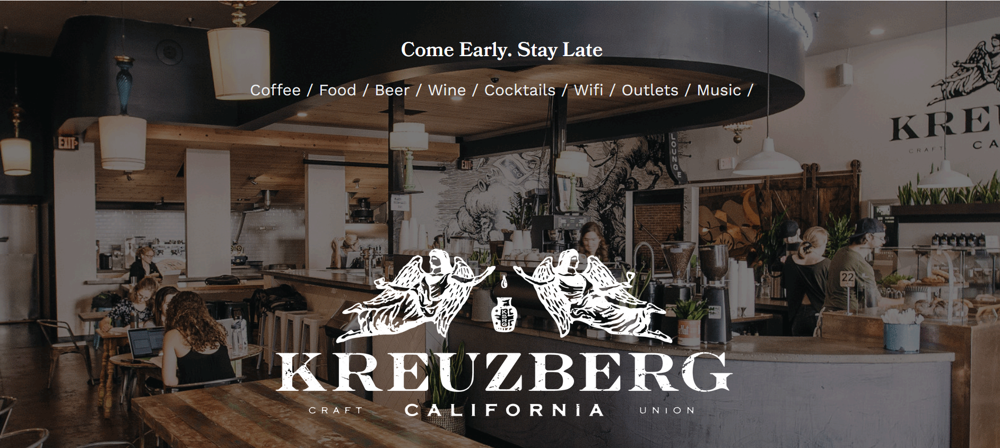
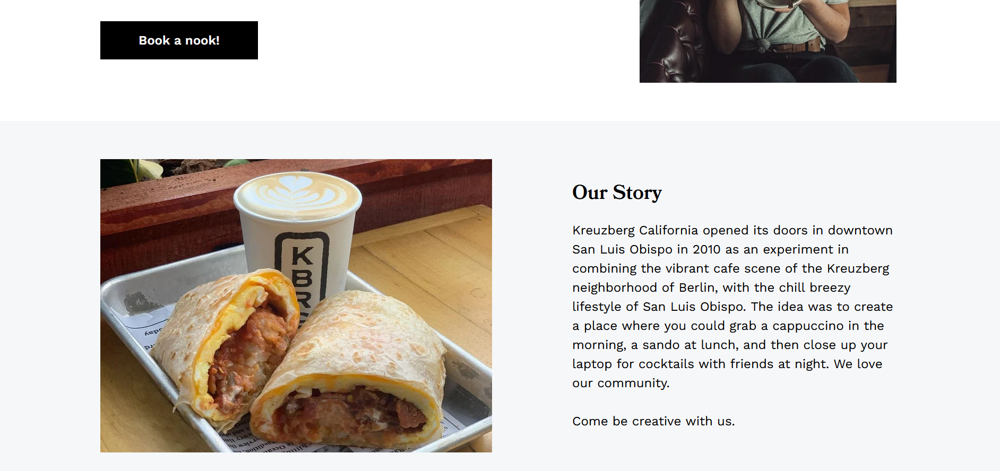
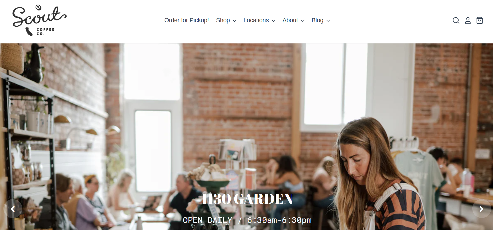
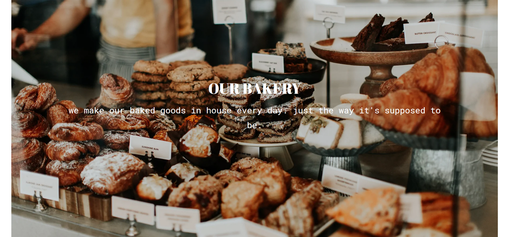

Final project proposal
Introduction
Munich Cafe
Munich Cafe wants to be a coffee shop not only for drinking coffee but to meet with friends, hang around or study. There are different sections for each thing you want to do like a area with couches to just chill or drink coffee or a silence room where you can work and study on your own without getting distracted from noise. Also the coffee sells typical german bakery products and bread.
Target audience
Mostly aimed for people with the age between 18 and 28 but pretty much everyone is welcome. The website will have a modern and clean looking layout where people from young to old can easily navigate trough.
Main goal is to inform the user about the menu of the coffee, what makes particular this coffee shop so special, and where to find it.
Comparative analysis
Active Coffee


Kreuzberg California
 Scout Coffee
 Website content
Home
Ever tasted typical bakery products of Germany whether sweet or salty? Taste them with a coffee while meeting your friends, enjoy the moment by yourself or study for college, Munich Cafe is the right place for it.
[A coffee bar]
About us
Our origins are from Germany, Munich, thats why the name of our cafe is Munich cafe. We want to share the typcial culture from Germany with the US with all the typcial dishes that come with it. Enjoy a good coffee while eating typical german bakery products and get a feeling of eurpean culture. We started with our first cafe in Santa Barbara 2019 and want to open a new one in San Luis Obispo.
[Skyline of Munich]
Menu
Coffee
-
Espresso
$3.00
-
Latte macchiato
$5.00
-
Cappuchino
$5.00
Breakfast
-
The Bavarian
White sausages with pretzel and sweet mustard
$15.00
-
For Vegetarians
jam, honey, nutella, buter, Bread basket, cheese selection with cream cheese cucumber and tomato
$14.00
[A coffee with pastries on a plate next to it]
Location
Where you can find us.
[Map with the location of the cafe is marked]